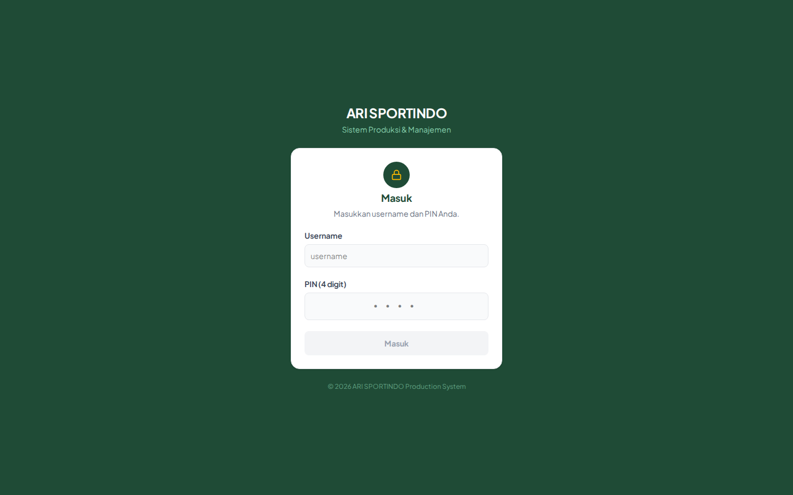
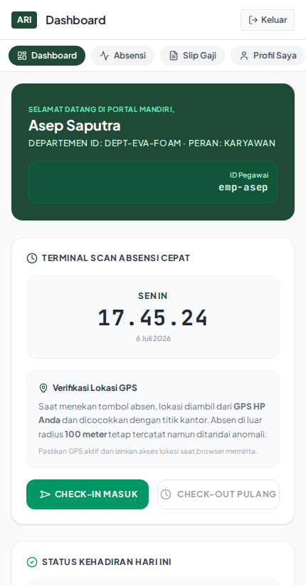
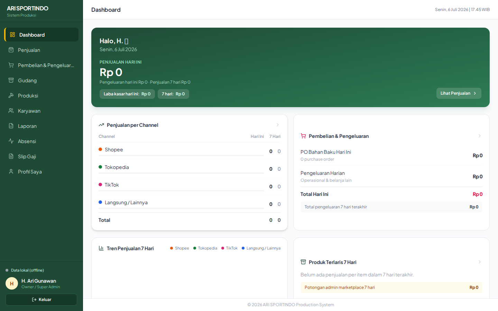
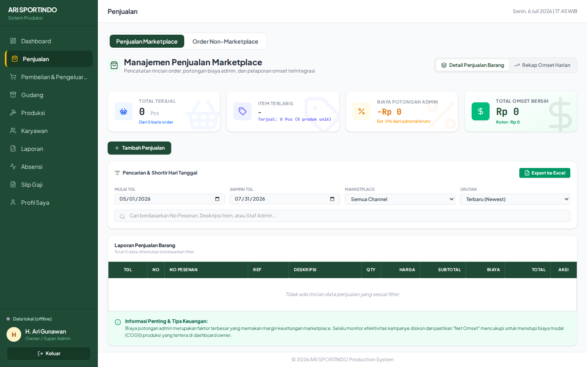
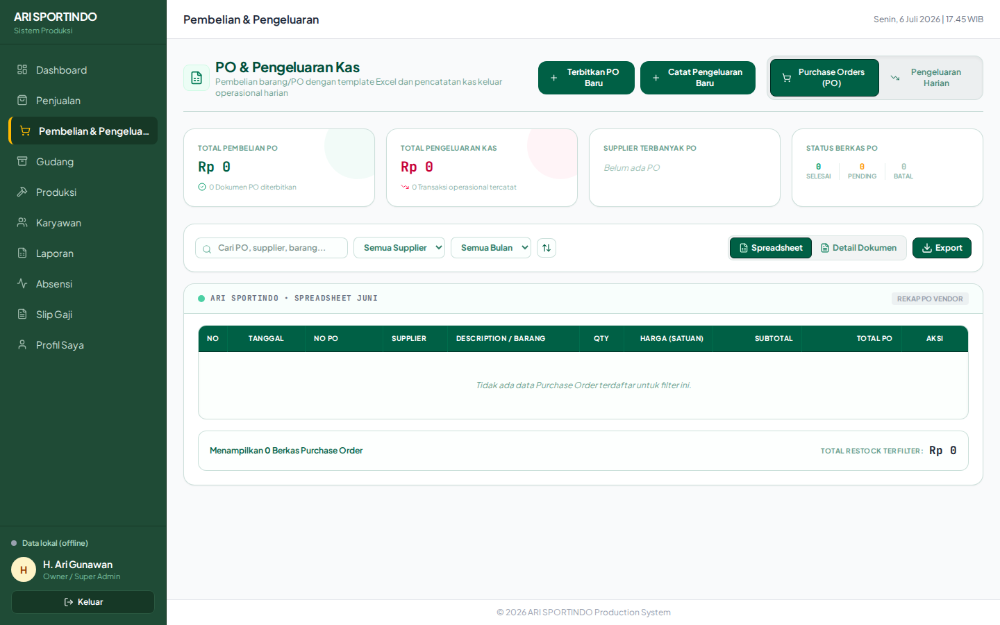
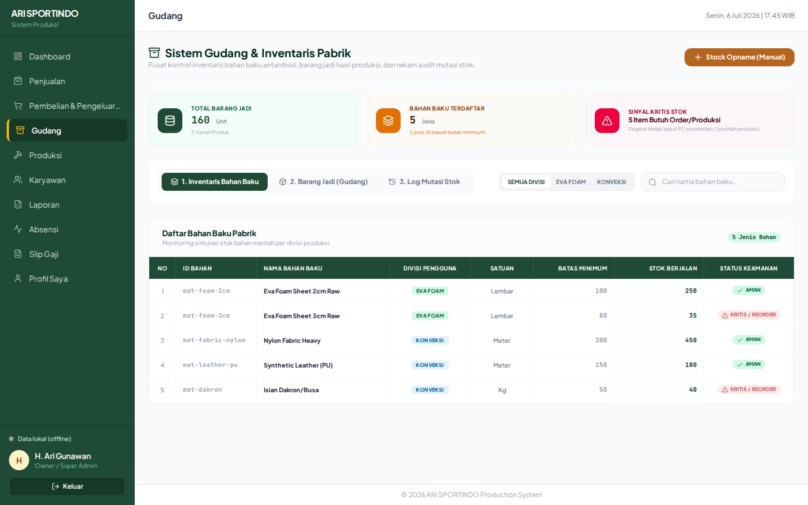
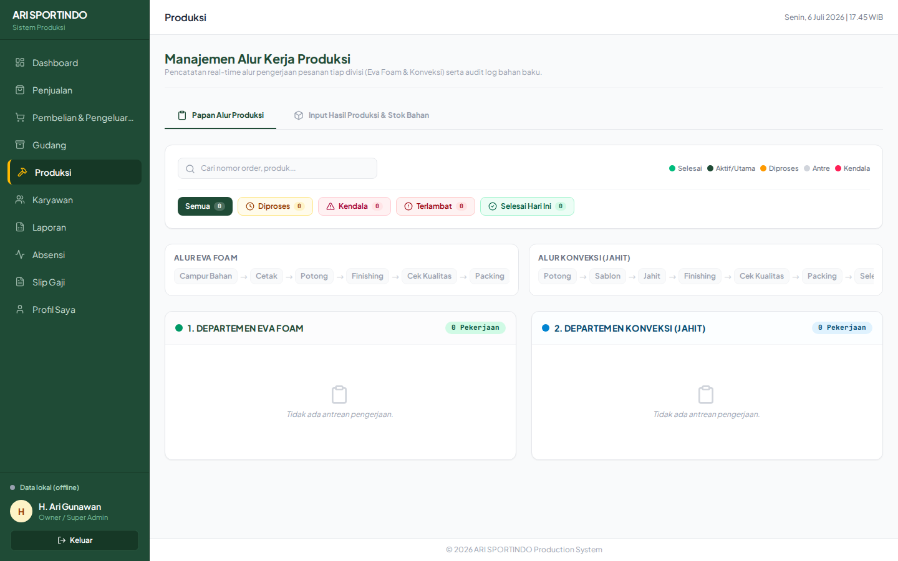
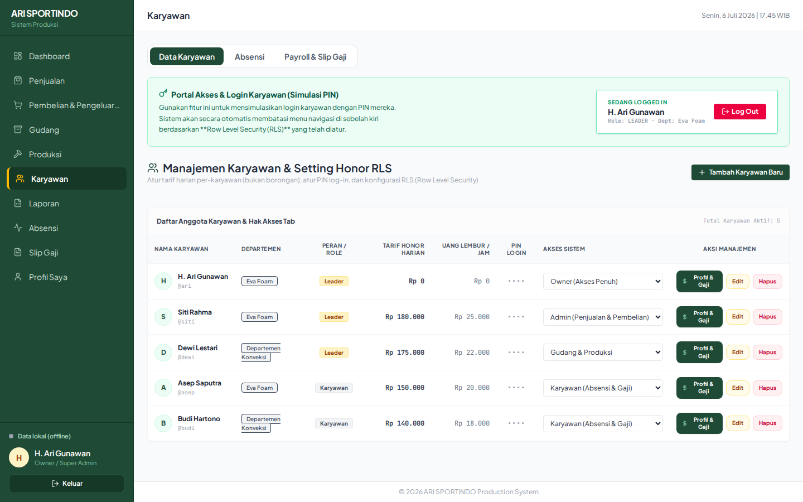
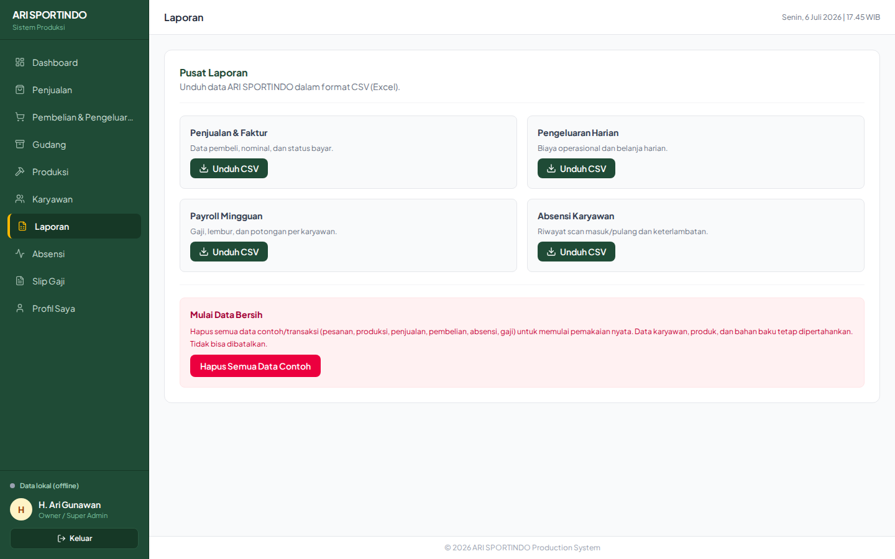

Versi 1.0 • Juli 2026 Panduan untuk Owner, Admin, Gudang & Produksi, dan Karyawan
Tentang panduan ini
Panduan ini menjelaskan cara memasang dan menggunakan aplikasi ARI SPORTINDO pada komputer maupun ponsel. Tampilan menu otomatis menyesuaikan hak akses akun.
Alamat resmi aplikasi Gunakan https://app.anxietyfightwear.com. Pastikan alamat dan ikon gembok HTTPS benar sebelum memasukkan username dan PIN.
Daftar isi
1. Mulai menggunakan aplikasi
3
2. Instalasi di laptop, desktop, dan HP
4
3. Hak akses dan navigasi
5
4. Dashboard dan penjualan
6
5. Pembelian, pengeluaran, dan gudang
7
6. Produksi
8
7. Karyawan, absensi, dan payroll
9
8. Profil, laporan, dan praktik aman
10
9. Pemecahan masalah
11
Istilah singkat
Istilah
Arti
PO
Purchase Order atau pesanan pembelian ke supplier.
Omset bersih
Nilai penjualan bersih yang dicatat dari channel marketplace.
Cloud
Penyimpanan terpusat agar data dapat tersinkron antarperangkat.
PWA
Aplikasi web yang dapat dipasang dan dibuka seperti aplikasi biasa.
1. Mulai menggunakan aplikasi

Halaman login ARI SPORTINDO
Masuk ke akun
Buka app.anxietyfightwear.com melalui browser.
Masukkan username yang diberikan administrator.
Masukkan PIN 4 digit, lalu pilih Masuk.
Setelah berhasil, dashboard dan menu sesuai peran akan tampil.
Jangan bagikan PIN. Setiap pengguna harus memakai akun sendiri agar pencatatan aktivitas dan akses data tetap jelas.
Navigasi
Komputer/laptop
Pilih menu melalui sidebar hijau di sisi kiri. Nama akun, status cloud, dan tombol Keluar berada di bagian bawah sidebar.
HP/tablet
Geser baris menu berbentuk kapsul ke kiri atau kanan. Tombol Keluar berada di kanan atas.
Status sinkronisasi
Status
Tindakan
● Tersinkron ke Cloud
Koneksi dan sinkronisasi berjalan normal.
● Menghubungkan…
Tunggu beberapa saat; jangan menutup aplikasi saat sedang menyimpan data penting.
● Offline / data lokal
Periksa internet. Data dapat tampil dari perangkat, tetapi perubahan antarperangkat belum tentu langsung tersedia.
● Cloud error
Segarkan halaman setelah koneksi stabil. Jika berulang, laporkan kepada administrator.
Sesi tetap tersimpan saat halaman disegarkan. Gunakan tombol Keluar jika memakai perangkat bersama.
2. Instalasi di laptop, desktop, dan HP

Tampilan aplikasi pada HP
Setelah dipasang, aplikasi memiliki ikon sendiri dan dapat dibuka dalam jendela terpisah tanpa tampilan browser penuh.
Chrome / Edge • Windows, macOS, Linux
Desktop atau laptop
Buka alamat aplikasi.
Klik ikon Install di kanan address bar, atau buka menu browser.
Pilih Install ARI Sportindo.
Konfirmasi Install.
Chrome • Android
HP Android
Buka alamat aplikasi.
Tekan menu ⋮.
Pilih Install app atau Tambahkan ke layar utama.
Tekan Install.
Safari • iPhone / iPad
iPhone atau iPad
Buka alamat melalui Safari.
Tekan tombol Bagikan.
Pilih Tambahkan ke Layar Utama.
Tekan Tambah.
Setelah instalasi
Membuka aplikasi
Cari ikon ARI Sportindo pada desktop, Start Menu, Launchpad, atau layar utama HP. Pembaruan aplikasi diterapkan otomatis saat versi baru tersedia.
Jika pilihan Install tidak muncul: pastikan menggunakan alamat HTTPS resmi, muat ulang halaman, lalu tunggu beberapa detik. Pada iPhone/iPad, instalasi harus dilakukan melalui Safari.
3. Hak akses dan navigasi

Dashboard dan navigasi akun Owner
Menu yang tidak sesuai tugas pengguna disembunyikan otomatis. Administrator menentukan peran melalui profil karyawan.
Peran
Akses utama
Owner / Super Admin
Seluruh dashboard, penjualan, pembelian, gudang, produksi, karyawan, laporan, absensi, slip gaji, dan profil.
Admin
Dashboard, penjualan marketplace/non-marketplace, pembelian dan pengeluaran, absensi, slip gaji pribadi, dan profil.
Dashboard pribadi, absensi, slip gaji pribadi, dan profil.
Aturan kerja yang disarankan
Periksa kembali tanggal, jumlah, harga, dan status sebelum menyimpan.
Gunakan tombol edit untuk koreksi; jangan membuat data ganda.
Perubahan stok berkaitan dengan status transaksi. Pastikan status mencerminkan kondisi nyata.
Konfirmasi dengan penanggung jawab sebelum menghapus transaksi.
Keluar dari akun setelah selesai menggunakan perangkat bersama.
Alur operasional ringkas
Proses
Alur
Pengadaan
Terbitkan PO → barang diterima → ubah status selesai → stok gudang bertambah.
Produksi
Periksa bahan → buat pekerjaan produksi → perbarui tahapan → selesaikan → stok produk jadi tercatat.
Penjualan
Catat marketplace atau order non-marketplace → perbarui status → cetak dokumen bila diperlukan.
SDM
Buat akun karyawan → absensi masuk/pulang → susun payroll → karyawan melihat slip.
4. Dashboard dan penjualan

Modul Penjualan Marketplace
Dashboard
Dashboard merangkum aktivitas penting seperti penjualan hari ini, pengeluaran, produksi berjalan, stok produk jadi, bahan baku kritis, dan status absensi. Gunakan dashboard untuk pemeriksaan cepat; buka modul terkait untuk detail atau koreksi.
Penjualan marketplace
Buka Penjualan → Penjualan Marketplace.
Pilih channel marketplace dan masukkan detail transaksi atau rekap omset harian.
Isi jumlah order terkirim, omset bersih, tanggal, dan staf penginput.
Pilih Simpan & Posting Detail atau Posting Rekap Omset Harian.
Gunakan aksi edit/hapus pada riwayat bila memang diperlukan.
Order non-marketplace
Buka tab Order Non-Marketplace.
Buat order dan lengkapi pelanggan, tanggal, item, jumlah, serta nilai transaksi.
Periksa total dan status pembayaran/order.
Simpan. Gunakan tombol Cetak untuk dokumen yang diperlukan.
Hindari pencatatan ganda. Sebelum membuat transaksi, cek riwayat berdasarkan tanggal, pelanggan, channel, atau nomor referensi.
5. Pembelian, pengeluaran, dan gudang

Modul Pembelian & Pengeluaran

Modul Gudang
Menerbitkan Purchase Order
Buka Pembelian & Pengeluaran, lalu pilih pembuatan PO.
Isi supplier, tanggal, nomor PO, staf, dan detail setiap barang.
Jika tersedia, hubungkan item dengan inventory agar pergerakan stok tepat.
Masukkan kuantitas dan harga satuan, kemudian periksa total.
Pilih status dan tekan Posting & Terbitkan PO.
Penting: stok gudang hanya bertambah ketika PO berstatus Selesai/Diterima. Status Pending belum menambah stok; PO Dibatalkan tidak boleh dianggap sebagai barang masuk.
Mencatat kas keluar
Pilih pencatatan pengeluaran, isi tanggal, kategori/keterangan, nominal, dan staf. Simpan setelah nominal diperiksa. Gunakan edit jika ada koreksi agar laporan tetap konsisten.
Gudang
Pantau stok bahan baku dan produk jadi melalui menu Gudang.
Gunakan data stok sebagai dasar sebelum memulai produksi atau menyetujui pembelian.
Periksa indikator bahan kritis pada dashboard.
Jika angka tidak sesuai fisik, telusuri PO dan transaksi produksi sebelum melakukan koreksi.
Rekonsiliasi: lakukan pengecekan stok fisik secara berkala dan bandingkan dengan aplikasi. Catat alasan setiap koreksi.
6. Produksi

Modul Produksi
Modul Produksi membantu tim memantau pekerjaan Eva Foam dan Konveksi dari antrean sampai selesai, sekaligus menjaga hubungan dengan stok bahan dan produk jadi.
Menjalankan pekerjaan produksi
Buka menu Produksi dan buat atau pilih pekerjaan.
Tentukan jenis produk, jumlah, operator, serta informasi pekerjaan yang diminta.
Pastikan sistem menunjukkan bahan baku lengkap dan mencukupi.
Perbarui tahapan sesuai kondisi nyata, misalnya antre, diproses, atau selesai.
Untuk proses yang memerlukan komposisi bahan, gunakan fungsi Campur Bahan dan periksa jumlahnya.
Selesaikan pekerjaan hanya setelah hasil produksi sudah dikonfirmasi.
Kontrol sebelum menyelesaikan
Pemeriksaan
Tujuan
Nama/jenis produk
Mencegah hasil masuk ke produk yang salah.
Jumlah hasil
Menjaga akurasi stok produk jadi.
Pemakaian bahan
Mencegah stok bahan menjadi negatif atau tidak wajar.
Status dan operator
Memastikan progres dan penanggung jawab dapat dilacak.
Jangan menyelesaikan pekerjaan terlalu awal. Perubahan status dapat memengaruhi perhitungan bahan dan stok produk jadi.
7. Karyawan, absensi, dan payroll

Data dan pengelolaan karyawan
Mengelola data karyawan Owner
Buka Karyawan → Data Karyawan.
Pilih Tambah Karyawan Baru.
Isi profil, username, PIN awal 4 digit, status aktif, dan peran akses.
Simpan lalu berikan username/PIN langsung kepada karyawan terkait.
Melakukan absensi
Buka menu Absensi dan izinkan akses lokasi jika diminta.
Pilih aksi absensi yang sesuai, misalnya masuk atau pulang.
Ikuti verifikasi yang tampil dan tunggu notifikasi berhasil.
Periksa nama, waktu, dan status lokasi pada hasil absensi.
Geofence 100 meter: absensi di luar area yang ditentukan ditandai ANOMALI dan koordinat disimpan sebagai bahan pemeriksaan HRD. Aktifkan GPS dan gunakan lokasi akurat.
Payroll dan slip gaji
Owner mengelola payroll melalui Karyawan → Payroll & Slip Gaji. Periksa periode, karyawan, komponen pendapatan/potongan, data kehadiran, dan total bersih sebelum menyimpan. Slip dapat dicetak menggunakan fungsi Cetak Slip Gaji.
Karyawan membuka menu Slip Gaji untuk melihat slip miliknya sendiri. Bila periode belum muncul, hubungi Owner/HRD untuk memastikan payroll sudah diterbitkan.
8. Profil, laporan, dan praktik aman

Pusat Laporan
Profil Saya
Ubah foto profil melalui tombol pada foto.
Perbarui nomor HP lalu tekan Simpan.
Untuk mengganti PIN, masukkan PIN lama, PIN baru 4 digit, dan konfirmasi PIN baru.
Mengunduh laporan Owner
Buka menu Laporan.
Pilih laporan penjualan, kehadiran, payroll, atau pengeluaran.
Tekan Unduh CSV.
Buka file hasil unduhan melalui Excel atau aplikasi spreadsheet.
Jika aplikasi memberi pesan “Tidak ada data untuk diekspor”, pastikan transaksi pada kategori tersebut sudah tersedia.
Praktik keamanan
Lakukan
Hindari
Gunakan PIN yang tidak mudah ditebak.
Memakai tanggal lahir atau PIN yang sama untuk semua orang.
Keluar setelah memakai perangkat bersama.
Membiarkan akun Owner terbuka tanpa pengawasan.
Periksa domain resmi dan HTTPS.
Login dari tautan tidak dikenal.
Batasi peran sesuai tanggung jawab.
Memberikan akses Owner jika tidak diperlukan.
Konfirmasi sebelum menghapus data.
Menghapus transaksi sebagai cara koreksi rutin.
9. Pemecahan masalah
Masalah
Solusi
Tidak bisa masuk
Pastikan username benar, PIN terdiri dari 4 digit, dan Caps Lock tidak memengaruhi username. Hubungi Owner bila akun nonaktif atau PIN lupa.
Menu tidak terlihat
Menu mengikuti peran akun. Minta Owner memeriksa akses sistem pada profil karyawan.
Data belum muncul di perangkat lain
Periksa status cloud dan koneksi internet, tunggu sinkronisasi, lalu muat ulang halaman.
Lokasi absensi ditolak/tidak akurat
Aktifkan GPS, izinkan lokasi untuk browser/aplikasi, matikan mode hemat lokasi, lalu coba di area kerja.
Aplikasi tidak dapat dipasang
Gunakan HTTPS resmi dan browser terbaru. Untuk iPhone/iPad gunakan Safari dan menu Bagikan.
Tampilan masih versi lama
Tutup seluruh jendela aplikasi, buka kembali saat online, lalu muat ulang. Pembaruan PWA diterapkan otomatis.
CSV tidak terunduh
Pastikan data tersedia dan browser mengizinkan unduhan. Periksa folder Downloads.
Stok tidak sesuai
Periksa status PO, riwayat produksi, jumlah item, dan transaksi terkait. Jangan langsung membuat transaksi pengganti.
Informasi yang perlu disertakan saat melapor
Nama pengguna dan peran akun—jangan pernah mengirim PIN.
Perangkat dan browser yang digunakan.
Menu serta tindakan sebelum masalah terjadi.
Waktu kejadian dan tangkapan layar pesan kesalahan.
Status koneksi/cloud saat kejadian.
Urutan pemeriksaan cepat: periksa internet → periksa status cloud → muat ulang → keluar dan masuk kembali → laporkan jika masalah tetap terjadi.
ARI SPORTINDO — Sistem Produksi & Manajemen Dokumen ini disusun berdasarkan aplikasi versi Juli 2026.